Años 60
Explora másLa década que revolucionó la música con el rock, el pop y las primeras grandes bandas de masas.


The Pop Music Team
Pop Music Team fue una de las bandas más controvertidas y fugaces del rock psicodélico mexicano. Su historia estuvo marcada por el éxito rápido, la censura y una disolución abrupta.
Facebook Spotify YouTube
Los Chijuas
Los Chijuas, una de las bandas pioneras más importantes del rock psicodélico y garaje mexicano de los años 60, ya no están activos como grupo, pero han vivido un importante resurgimien
Facebook Spotify YouTubeAños 70
Explora másNace el rock progresivo, el hard rock y el disco. Una década de experimentación total.
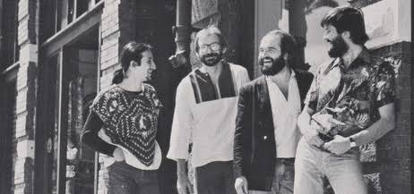
Sacbé
Sacbé es considerada unánimemente por la crítica como la banda de jazz fusión más importante e influyente en la historia de México. Fundada en la Ciudad de México en 1976, la agrupación revolucionó la escena musical nacional al combinar el jazz contemporáneo con ritmos latinoamericanos e identidad propia.
Facebook Spotify YouTube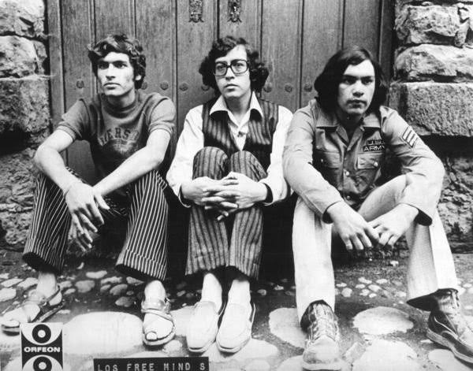
Los Free Minds
Los Free Minds fue un extraordinario e icónico "power trio" de rock ácido y psicodélico surgido en León, Guanajuato. Aunque fueron una de las bandas más potentes del Bajío mexicano, su discografía oficial fue sumamente limitada y su historia quedó marcada por la paradoja de uno de los festivales más grandes del país
Facebook Spotify YouTube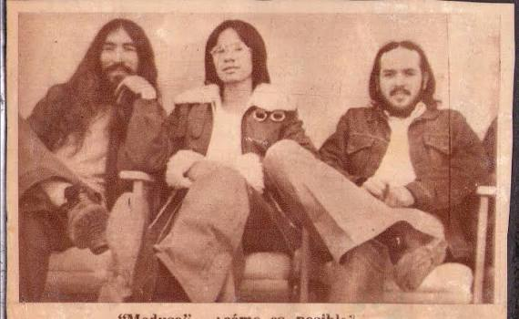
Medusa
Medusa fue una de las bandas más pesadas, oscuras y de culto del underground mexicano de los años 70. Autodefinidos como una banda pionera de proto-doom metal y stoner rock cantado en español, su historia destaca por la resistencia cultural ante la marginación mediática y un histórico relanzamiento internacional acontecido en 2026.
Facebook Spotify YouTubeAños 80
Explora másEl synth-pop, el glam metal y el pop electrónico dominan la escena musical.
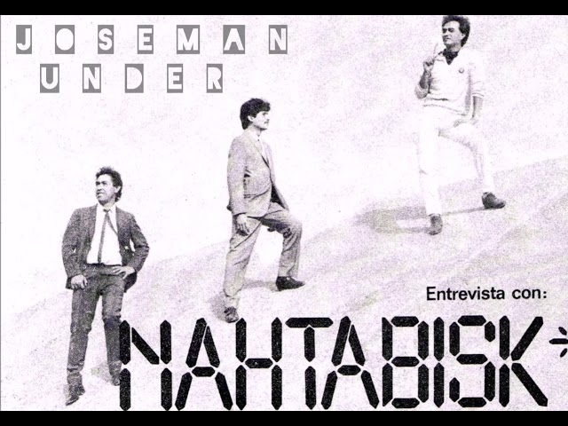
Nahtabisk
Nahtabisk es una de las bandas más raras, fascinantes y de auténtico culto en la historia de la música electrónica, el synth-pop y el new wave en México. Emergidos a principios de los años 80 en la Ciudad de México, fueron pioneros absolutos en el uso de sintetizadores y cajas de ritmo en una época dominada por las guitarras de rock tradicionales.
Facebook Spotify YouTube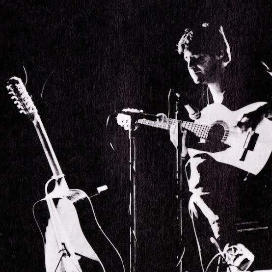
Eblen Macari
Eblen Macari es uno de los compositores y guitarristas más brillantes, vanguardistas y de culto en la historia de la música contemporánea en México. Pionero del ambient, la música incidental, el new age y la fusión étnica en el país, ha creado puentes sonoros únicos entre las raíces árabes, la música barroca y los sintetizadores analógicos.
Facebook Spotify YouTube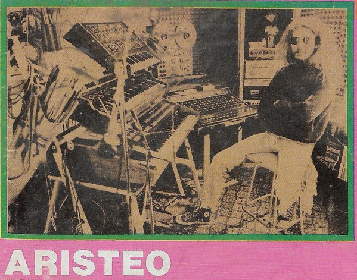
Aristeo
Aristeo fue el pseudónimo artístico y el proyecto musical del multinstrumentista, compositor y sonidista Heriberto Montes de Oca (1950–2009). Originario de Nogales, Sonora, es considerado uno de los secretos mejor guardados y un pionero absoluto del rock progresivo electrónico, el space rock y la música ambient en el norte de México.
Facebook Spotify YouTubeAños 90
Explora másEl grunge, el britpop y el hip-hop marcan una nueva era en la música.
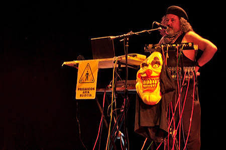
Capitán Pijama
Capitán Pijama fue el pseudónimo artístico de Jesús Bojalil Gil (1954–2014), un indomable e iconoclasta músico, artista y periodista musical de la Ciudad de México. Es ampliamente reverenciado como uno de los grandes pioneros y padres de la música electrónica, el tecno-pop, el krautrock y el synth-pop experimental en México..
Facebook Spotify YouTube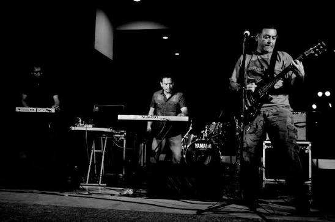
La Función de Repulsa
La Función de Repulsa (LFDR) es considerada por investigadores y críticos la banda pionera y el pilar absoluto del rock industrial, el noise y el avant-garde electrónico en el noreste de México.Surgida en Ciudad Victoria, Tamaulipas, la agrupación rompió con el monopolio de las bandas de la capital al crear un sonido crudo, maquinal y disidente, utilizando sintetizadores y "electrónica barata al servicio de la destrucción".
Facebook Spotify YouTube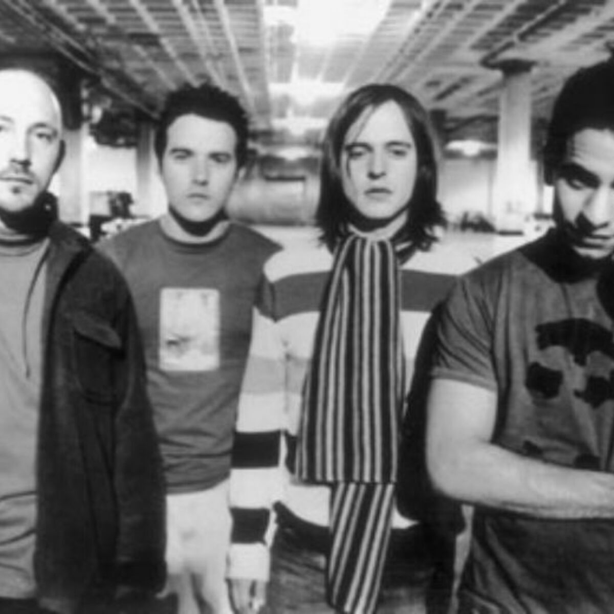
Zurdok
Zurdok (originalmente Zurdok Movimento) es una de las bandas más revolucionarias, brillantes y de culto del rock alternativo en México. Emergidos desde Monterrey, Nuevo León, fueron los arquitectos y puntales más sofisticados del movimiento cultural y musical conocido como la Avanzada Regia a finales de los años 90.
Facebook Spotify YouTubeAños 2000
Explora másEl pop-punk, el indie rock y el reguetón toman fuerza en la escena mundial.
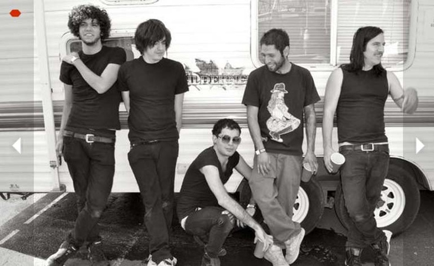
Hong Kong Blood Opera
Hong Kong Blood Opera (HKBO) es una de las bandas más frenéticas, agresivas e inclasificables de la escena del synth-punk, hardcore y screamo en México. Nacida en Hermosillo, Sonora, la agrupación se mudó a la Ciudad de México y se convirtió en una leyenda del underground gracias a sus shows caóticos, el uso destructivo de sintetizadores y una actitud completamente desbocada.
Facebook Spotify YouTube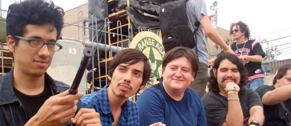
Bam Bam
Bam Bam fue una de las bandas más inclasificables, disidentes y estimulantes de la escena independiente mexicana a finales de la década de los 2000 y principios de los 2010. Nacidos en Monterrey, Nuevo León, rompieron por completo el estándar del pop o la música de baile electrónica de su región para sumergirse en un sonido de baja fidelidad (lo-fi), rock ácido, pop psicodélico y ramalazos de krautrock.
Facebook Spotify YouTube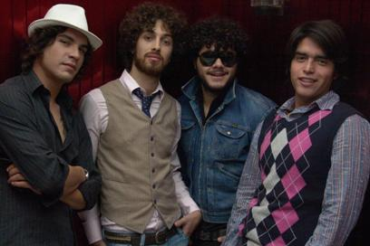
Los Dynamite
Es considerada una de las agrupaciones fundacionales y los auténticos "padrinos" del indie rock, dance-punk y post-punk revival en México. Emergidos en la Ciudad de México a principios de los años 2000, rompieron el molde tradicional del rock en español al componer en inglés con una estética energética, cruda y vanguardista fuertemente influenciada por la escena neoyorquina de bandas como The Strokes e Interpol.
Facebook Spotify YouTubeAños 2010
Explora másEl streaming cambia la industria; el pop, el trap y el indie se globalizan.
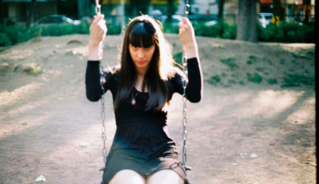
Dani Shivers
Dani Shivers es el proyecto solista de Yovana Schaffner (conocida artísticamente como You Schaffner), una compositora y productora nacida en Tijuana, Baja California. Es una de las figuras más singulares del underground fronterizo, catalogada como la reina del witch house, dark wave, dark pop melancólico y lo-fi en México..
Facebook Spotify YouTube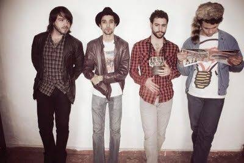
60 Tigres
60 Tigres es una de las bandas más creativas, vibrantes e indispensables del movimiento de la Avanzada Regia del nuevo milenio (la generación de los años 2000). Originarios de Monterrey, Nuevo León, la agrupación se consolidó como uno de los máximos referentes del indie rock, el dance-punk, el garage rock y el synth-pop en el norte de México, caracterizados por sus líneas de bajo sumamente bailables y sintetizadores espaciales.
Facebook Spotify YouTube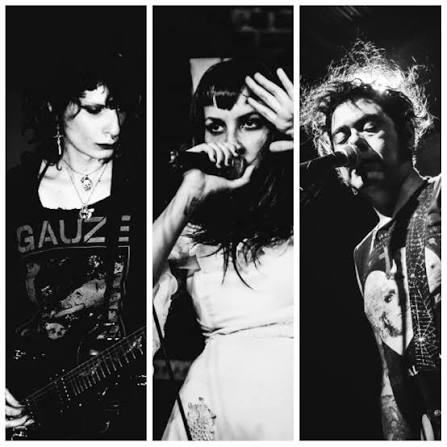
Cruz de Navajas
Cruz de Navajas es principalmente conocida en todo el mundo como una de las canciones más icónicas e históricas de la mítica banda española Mecano (lanzada en 1986). Sin embargo, en el circuito underground existe Cruz de Navajas, una extraordinaria y sombría banda de post-punk, deathrock y dark wave originaria de la Ciudad de México.
Facebook Spotify YouTubeAños 2020
Explora másNuevas bandas y solistas conquistan las plataformas digitales con sonidos frescos.
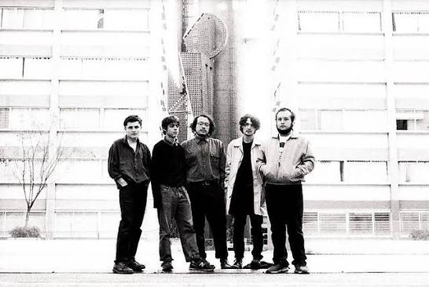
Diles que no me Maten
Diles que no me maten es una de las bandas más aclamadas, poéticas y fascinantes del rock experimental, post-punk y krautrock contemporáneo en México. Tomando su nombre del icónico cuento homónimo de Juan Rulfo, la agrupación de la Ciudad de México destaca por crear atmósferas hipnóticas llenas de pasajes hablados (spoken word) y muros de sonido psicodélico.
Facebook Spotify YouTube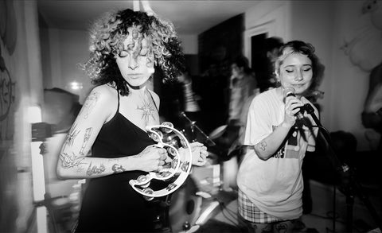
Grito de Exclamación
Formados formalmente en 2021, se han consolidado como un colectivo artístico que aborda la denuncia social, el caos urbano y la alienación contemporánea a través de una puesta en escena casi teatral. Sus conciertos están diseñados para eliminar la distancia entre el artista y el espectro del público. Durante sus actos en vivo en foros underground o recintos como el Foro Cultural Universitario de la UNAM, la banda suele bajar del escenario, repartir percusiones u objetos ruidosos a la gente e incitar al grito y la catarsis colectiva.
Facebook Spotify YouTube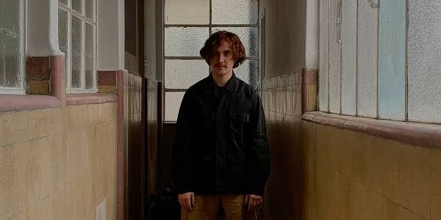
Wet Leg
Sonic Emerson es el proyecto de rock psicodélico, dream pop, shoegaze y krautrock fundado y liderado por el multinstrumentista y productor capitalino Sebastián Neyra. Es uno de los actos más propositivos, sofisticados e hipnóticos de la escena independiente contemporánea en México, caracterizado por sus densas e inmersivas texturas de guitarra.
Facebook Spotify YouTube